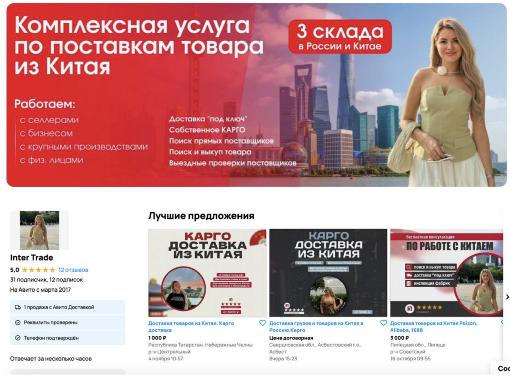
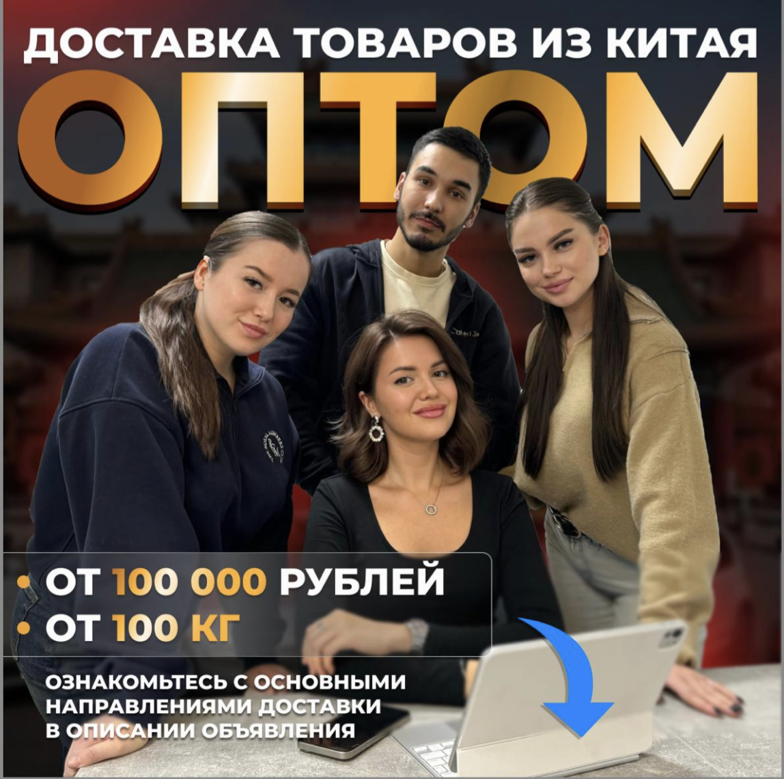
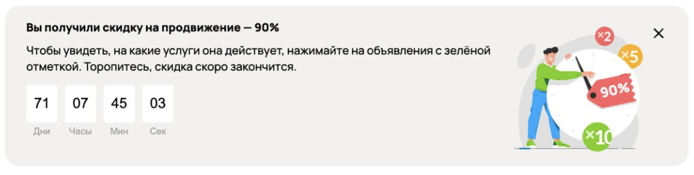
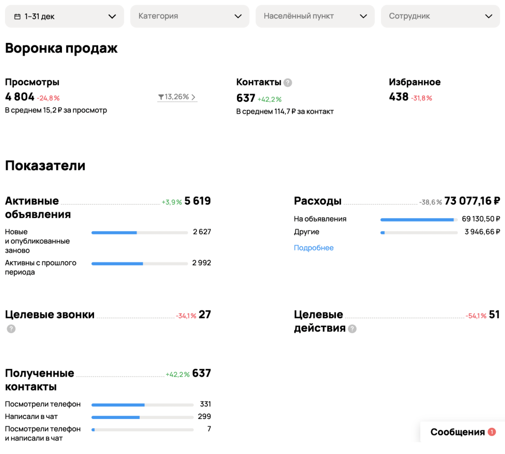
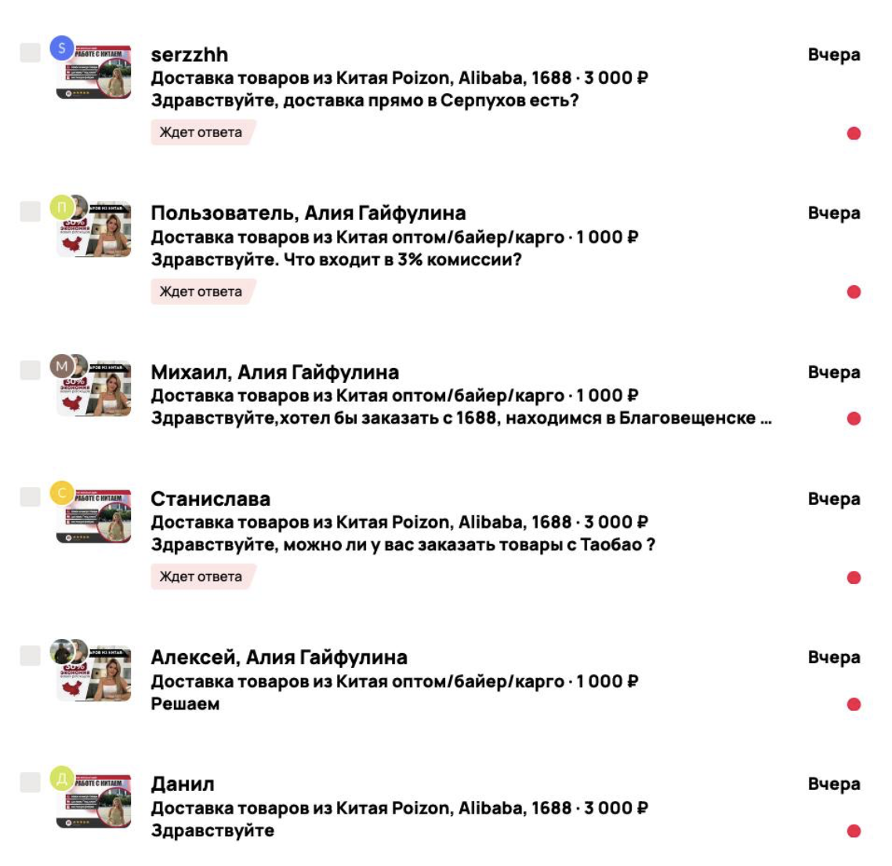

Как мы получили 637 обращений
для логистической компании
Ниша логистики и карго-перевозок из Китая это одна из самых конкурентных на Авито: большинство компаний используют массовую публикацию объявлений, а стоимость лида часто растёт из-за перегретого спроса.
Но даже в таких условиях можно выстроить стабильный поток заявок по низкой цене, если правильно использовать механику площадки и работать со стратегией размещения.
О клиенте
Ниша: логистика, доставка и экспорт товаров из Китая (карго)
География: вся Россия
Формат: работа с бизнесом (B2B)
Проблема клиента
Клиент пришёл с задачей запуска нового канала привлечения:
- Аккаунт на Авито ранее не использовался для бизнеса
- Профиль был оформлен как личный (продажа б/у вещей)
- Отсутствовал опыт работы с площадкой
- Не было стабильного источника входящих заявок
Главный запрос: создать стабильный поток входящего трафика с Авито
Исходная ситуация (точка А)
Фактически запуск происходил с нуля:
- Отсутствовал бизнес-профиль
- Не было объявлений
- Не было статистики
- Не было понимания, какие связки работают
Ресурсы клиента:
- Бюджет: 50 000 ₽ на старте
- Есть отдел продаж
- Подключена CRM-система
Основной запрос: создать стабильный источник входящего трафика
Анализ ниши и конкурентов
Перед запуском мы провели анализ категории и выявили ключевые особенности:
- Большинство конкурентов используют массовую публикацию объявлений
- Основная категория: «грузоперевозки»
- Сильнее всего выделяются объявления с инфографикой
- Идёт активная конкуренция за выдачу
Сделали вывод, что в этой нише побеждает не один «идеальный оффер», а масштаб + правильная упаковка + работа с алгоритмами Авито.
Стратегия продвижения
Мы выбрали стратегию быстрого захвата выдачи через:
- Массовую публикацию объявлений
- Работу с инфографикой
- Использование специальных тарифов Авито
Ключевое решение — подключение тарифа через менеджера Авито:
- Публикация объявлений по минимальной стоимости
- Оплата за целевые действия (звонки/чаты)
- Доступ к дополнительным бонусам и скидкам
Это позволило масштабироваться быстрее конкурентов при том же бюджете.
Что мы сделали
1. Полностью переупаковали профиль
- Перевели аккаунт в бизнес-формат
- Подготовили структуру под услуги логистики
- Выстроили понятную подачу под B2B-аудиторию

2. Запустили массовую публикацию объявлений
- Настроили автозагрузку
- Ежедневно публиковали новые объявления
- Масштабировали количество до 5000+ объявлений
Это дало постоянный приток релевантных просмотров.
3. Сделали упор на визуал
- Разработали креативы с инфографикой
- Протестировали разные форматы
- Добавили фото с командой
Лучший результат показали именно креативы с людьми, повышающие доверие.

4. Настроили продвижение
- Подключили тариф с оплатой за целевые действия
- Масштабировали лучшие объявления
- Использовали продвижение x5–x10 на эффективных связках
Получили скидку до 90% на продвижение, что кратно увеличило охват.

Результаты за 3 месяца работы
На пиковые показатели вышли к 3 месяцу:
- Просмотры:
- 4 804
- Контакты:
- 637
- Конверсия объявлений:
- 13%
- Стоимость контакта (CPL):
- 115 ₽
- Добавления в избранное:
- 438
- Целевые заявки:
- 78
Ключевой результат:Удалось выстроить масштабируемый поток заявок по низкой стоимости (при этом выйти на высокую конверсию для конкурентной ниши)

Что это дало клиенту
- Стабильный поток входящих обращений
- Полностью рабочий канал привлечения с Авито
- Возможность масштабировать поток заявок
- Снижение стоимости лида за счёт оптимизации

Инсайты по нише логистики (карго)
В процессе работы выявили несколько важных закономерностей:
1. Визуал решает
Инфографика и фото команды дают конверсию до 13%
2. Масштаб - ключевой фактор
Чем больше объявлений, тем выше охват и поток заявок
3. Тарифы Авито = скрытое преимущество
Работа через менеджера даёт:
- Оплату за результат
- Доступ к бонусам
- Значительное снижение затрат
4. Регулярная публикация обязательна
Новые объявления = постоянный органический трафик
Хотите такие же результаты?
Мы разберём ваш профиль на Авито и покажем:
- Где вы теряете заявки
- Как снизить стоимость лида
- Какие объявления дадут рост
Оставьте заявку или напишите нам в Telegram @sasha_mulin и мы подготовим для вас бесплатный аудит.